★SOUND Manual
★トーンエディタユーザーズマニュアル/
★SOUND Manual
★トーンエディタユーザーズマニュアル/
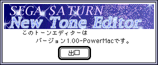
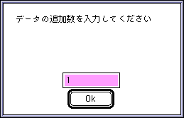
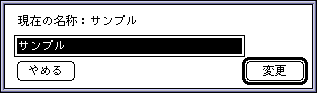
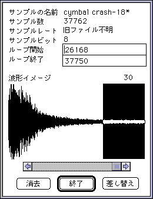
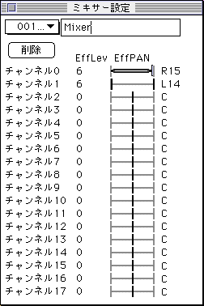
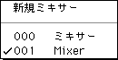
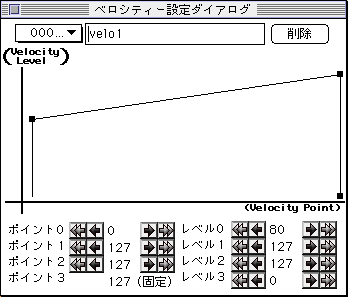
削除した場合レイヤーの各参照番号は変化しませんから削除された番号より
も後の番号がアサインされているレイヤーはアサインデータがずれてしまい
ます。（最後の番号がアサインされていた場合未設定の状態になります）
ユーザーはそのことに注意して削除ボタンを押してください。
削除する場合は警告のアラートを表示するようにしています。
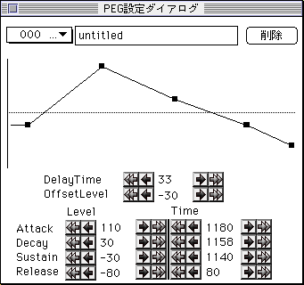
グラフは設定されたトータルタイムをスタートからリリースのスタートポ イントまでのドット数で割りドット当たりのタイムから各ポイントを決めて あります。よって一つのパラメータを動かすと他のポイントが動いたり上昇 率が比例しないなどの視覚的な矛盾が出てきますがこれはバグではありません。
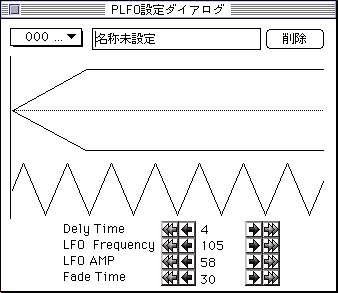
ボタンの使用方法はベロシティーと全く同じなので割愛します。
このメニューを実行するとターゲット状態により以下の２つのダイアログが表示 されます。
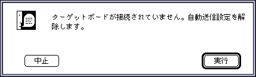
実行ボタンを押した場合ターゲットボードとの通信は断絶します。発音テストは
できませんがデータのエディットは可能になります。
中止ボタンの場合はアプリケーションを終了します。
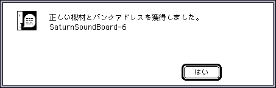
このメッセージが出ない限りターゲットボードとの通信はできません。
このほかにターゲットボードは接続されているがバンクが正しく取れなかった場合は
「ドライバーが起動されていない可能性があります。」
エラーが表示されます。作業自体は中断されません。
< 「サイズのアップデートを自分でやる」
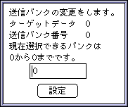
ターゲットデータ | 変更対象となっているバンクの番号。 |
送信バンク番号 | 現在設定されている送信バンク番号。 |
現在選択できるバンク | 現在ターゲットボード上のバンク設定で送信可能なバンク。 |
設定値 | 新規の設定値。 |
注 意 |
以前保存したバンクの設定によっては選択可能なバンクよりも大きい数字がアサインされている場合があります。これはバグではありません。 |
|---|
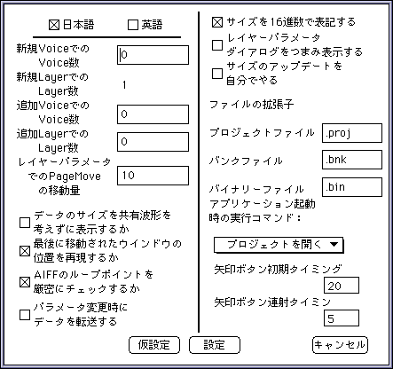
チェックしていない状態で、2組以上のループポイントがあった場合、ルー プ情報は破棄され波形のはじめから最後までをループポイントとして認識し ます。
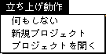
★SOUND Manual
★トーンエディタユーザーズマニュアル/